The general approach and cardiac history first, then each part of the exam in the order you do it: what to look for, each manoeuvre grouped under the problem you suspect (numbered steps and what counts as positive), and the four classic murmurs. Built from the Week 4 session and the course objectives; anything only the PoM 1 Cardiology session teaches is tagged later.
Look: everything shown. Pick a region below to jump to it.
Inspect → Palpate → Percuss → Auscultate
Neck veins and carotids, then the precordium and its four listening areas, then the pulses and the legs. Compare one side with the other, and time every sound against the carotid pulse.
General approach
Every cardiovascular exam
The general approach
Say it first (TOSCE): "Hello, I'm ___, a medical student. Can I check your name and age? I'd like to examine your heart and circulation, which means looking at you, your neck and your chest, feeling your pulses and chest wall, and listening to your heart with a stethoscope. Is that alright?" Then wash your hands (15 seconds), clean the stethoscope, and put on any protective equipment needed.
Position and draping: patient lying back, head of the bed raised to about 30° (the Week 4 session; the PoM 1 Cardiology session says 45° above the sternal angle); chest exposed and properly draped so you can see the precordium (the area of the front chest wall that lies over the heart and lower chest); you stand at the patient's right side
Ask for the vitals: heart rate, blood pressure, respiratory rate, temperature, oxygen saturation (SpO2)
Inspect: distress first, then hands, face, neck veins and the chest wall (precordium: scars, symmetry, apical impulse, abnormal pulsations)
Palpate: the carotid pulse (listen to it before you press on it), then the precordium (apical impulse, heaves, thrills), then the peripheral pulses and the legs for swelling
Percuss: not used on the heart; percuss the lung bases at the end (fluid from heart failure) later: PoM 1 Cardiology
Auscultate: the four listening areas and the carotids, with the diaphragm and then the bell
The cardiac cycle in one line: S1 ("lub") is the mitral and tricuspid valves closing, so systole starts; the carotid pulse is felt while the ventricles eject. S2 ("dub") is the aortic and pulmonary valves closing, so diastole starts and the ventricles fill
S2 splits on breathing in (the aortic valve closes before the pulmonary: A2 then P2) and the splitting disappears on breathing out later: PoM 1 Cardiology
Tap to reveal
Before you examine: the cardiac history
An organized, patient-centred history comes first later: PoM 1 Cardiology
History of the presenting illness: OPQRST (Onset, Provocation, Quality, Region/Radiation, Severity, Timing)
Cardiac symptoms to ask about: chest pain (in the chest or legs, and during exertion?), dyspnea (shortness of breath), palpitations, swelling of the legs (edema), fainting, sweating, nausea or vomiting, wheezing
Orthopnea (worse lying flat) and paroxysmal nocturnal dyspnea (waking at night and having to sit on the edge of the bed to catch your breath)
Past history: illnesses, hospitalizations, surgeries, high cholesterol · medications and allergies · family history
Social history: occupation, family and friends, alcohol, smoking, drugs, diet, physical exercise
⚠ Six chest-pain causes that can kill, keep them on the differential: heart attack, cardiac tamponade (fluid squeezing the heart), aortic dissection (a tear in the aortic wall), pulmonary embolism (a clot in the lungs), pneumothorax (collapsed lung), esophageal rupturelater: PoM 1 Cardiology
Tap to reveal
Inspect
PPES 1 · Week 4 · 4 manoeuvres
What to look for
Before the manoeuvres
Say first: "I'd like to start by looking at you, your hands, your face and your chest. Please lie back at an angle, and I'll keep you covered."
General inspection first: does the patient look well or unwell? Signs of respiratory distress (nasal flaring, accessory muscle use, pursed-lip breathing), pallor, central cyanosis, nutrition
Face: eyes (pallor, jaundice), the colour of the lips and tongue, rash across the cheeks, xanthelasma (yellow fatty plaques on the eyelids) later: PoM 1 Cardiology
Chest wall (precordium): look for scars, thoracic symmetry, the apical impulse and abnormal pulsations, with the patient flat
Tap to reveal
Look at the whole patient
General inspection
Is the patient unwell, short of breath or short of oxygen? later: PoM 1 Cardiology
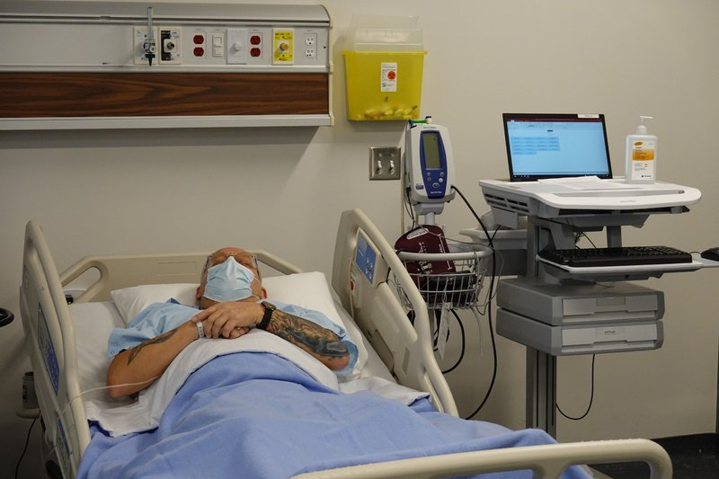
Steps
Look at the patient while you talk and take the history
Note colour (pallor, plethora, blue lips or tongue)
Note breathing: nasal flaring, accessory muscles, pursed lips, can they finish sentences
Look at nutrition and general state
Positive
Distress · pallor · central cyanosis (blue tongue and lips) · cachexia (wasting)
Tap to reveal
Hands
Heart and circulation problems showing in the fingers
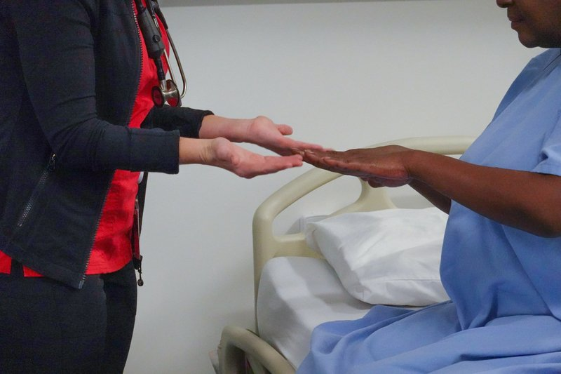
Steps
Feel the temperature of the hands
Look at the fingertips and nails: colour, clubbing (Schamroth window), splinter hemorrhages (thin dark lines under the nail)
Look at the finger pads and palms for Osler's nodes (painful) and Janeway lesions (painless)
Check capillary refill (section 7)
Positive
Cool, blue fingers (peripheral cyanosis) · clubbing · splinter hemorrhages, Osler's nodes, Janeway lesions (infection of the heart valves, endocarditis)
Tap to reveal
Face and eyes
Signs of anemia, cholesterol and blue lips
Steps
Pull down the lower eyelid: conjunctival pallor; look at the sclera for jaundice
Look at the lips and under the tongue: central cyanosis
Look at the eyelids for xanthelasma; look across the cheeks for a malar rashlater: PoM 1 Cardiology
Positive
Pale conjunctiva · blue tongue · yellow plaques on the lids (high cholesterol) · flushed cheeks
Tap to reveal
Look at the chest
Chest wall inspection
Scars, deformity, and the heartbeat showing through the skin
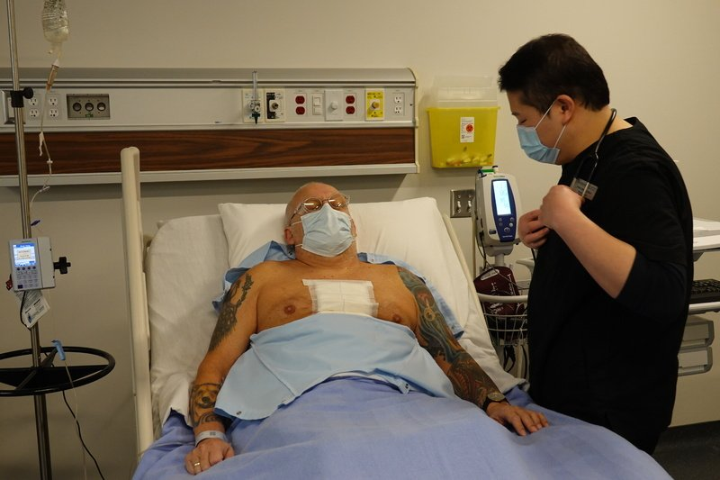
Steps
Expose the chest and look from the foot of the bed, then from the side
Scars: a midline scar down the sternum (heart surgery), under the left breast or in the side of the chest
Symmetry of the two sides of the chest as the patient breathes
Look for the apical impulse and any abnormal pulsation
Positive
Scars · deformity · asymmetry · a visible apical impulse away from its usual spot, or pulsation in other places (normal: the apical impulse may be seen at the 5th space)
Tap to reveal
Pearls
Remember
*"The patient looks comfortable at rest. No cyanosis, clubbing, splinter hemorrhages or xanthelasma. No scars or deformity of the chest wall."*
Tap to reveal
Neck: JVP and carotids
PPES 1 · Week 4 · 4 manoeuvres
What to look for
Before the manoeuvres
Say first: "Now I'd like to look at the veins in your neck and feel your neck pulse. Please turn your head slightly away from me."
Jugular venous pressure (JVP) is the pressure in the right atrium, read from the internal jugular vein; with the patient reclined, look at the neck for the jugular venous pulsation and distension and know its features
Carotid pulse: note rate, rhythm, contour and amplitude
JVP pulse features: two peaks and two troughs per beat; it is soft, not palpable, and it moves with breathing; it disappears when you press on the vein just above the collar bone (the carotid does not)
Low JVP means too little fluid (hypovolemia); high JVP means too much (heart failure, fluid overload)
Tap to reveal
Neck veins: right-sided pressure
JVP (jugular venous pressure)
Right-sided heart pressure and fluid status
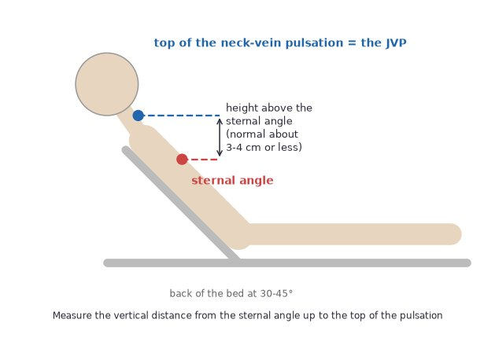
Steps
Patient reclined at 30° to 45° (PoM 1 Cardiology says 45°), head turned slightly away, neck muscles relaxed
Shine a light tangentially across the neck
Find the pulsation between the two heads of the sternocleidomastoid muscle (internal jugular vein)
Check it is venous: it is not palpable, falls on breathing in and fades when you press just above the clavicle
Measure the vertical height from the sternal angle (the bump where the manubrium meets the sternum) to the top of the pulsation, with a ruler
If you cannot find it, lower the head of the bedlater: PoM 1 Cardiology
Positive
More than about 3 cm above the sternal angle (normal: ≤ 3 cm; some sessions say < 4 cm) · distended veins at 45°: high right-sided pressure
Tap to reveal
Hepatojugular reflux
Right heart failure: a heart that cannot take the extra blood
Steps
Keep the patient reclined with the JVP in view
Press firmly on the right upper abdomen for about 10 seconds
Ask the patient to breathe normally (do not hold the breath)
Watch the JVP later: PoM 1 Cardiology
Positive
JVP rises and stays up while you press (normal: a brief rise that settles)
Tap to reveal
Carotid artery
Carotid pulse
Rate, rhythm, contour and amplitude of the pulse at the neck
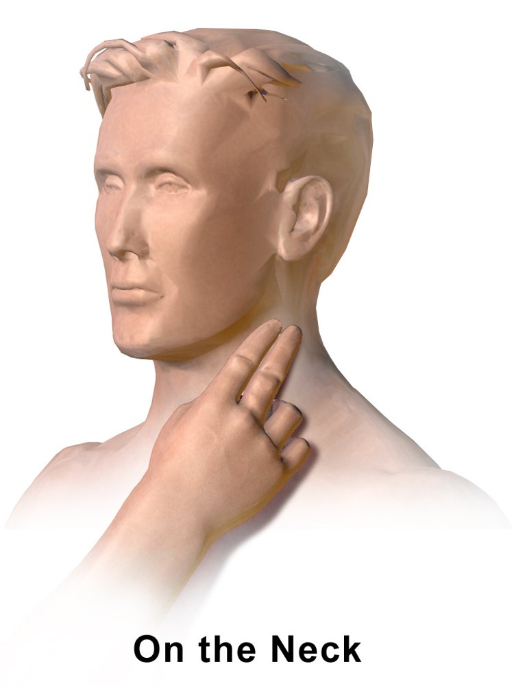
Steps
Listen over the carotid first for a bruit (a whooshing sound)
Then place your finger pads between the larynx and the sternocleidomastoid on one side only
Press gently, never both sides at once
Note rate, rhythm, contour (the shape of the wave) and amplitude (strength)
Compare with the other side
Positive
Bruit (narrowed artery, or a murmur radiating from the aortic valve) · weak and late pulse · bounding pulse · irregular rhythm
Tap to reveal
Carotid bruit
A narrowed carotid artery, or a murmur travelling up from the heart
Steps
Ask the patient to hold their breath for a few seconds
Place the diaphragm over the carotid
Listen on both sides
Positive
A whooshing sound (a murmur from aortic stenosis radiates up here)
Tap to reveal
Pearls
Remember
*"The JVP is not elevated, at 2 cm above the sternal angle at 30 degrees. The carotid pulse is regular, of normal volume, and there are no bruits."*
Tap to reveal
Palpate the precordium
PPES 1 · Week 4 · 4 manoeuvres
What to look for
Before the manoeuvres
Say first: "I'm going to feel the front of your chest over your heart, to find your heartbeat and check for any vibrations."
Palpate the precordium (with the patient sitting if you need to) for the apical impulse (note its location and size), for ventricular lifts (heaves), thrills, and a rub; the PoM 1 Cardiology session adds gallop rhythm and asks you to give the apical impulse as an intercostal space and a distance in centimetres from the midsternal line
Landmarks: the point of maximal impulse (PMI) is the apex beat; normal is the 5th intercostal space in the mid-clavicular line; the sternal angle meets the 2nd rib, which is how you count spaces down the chest
Describe the apical impulse with LADS: Location, Amplitude, Duration, Size
Heaves are felt as the heel of your hand being lifted at each beat (a big, strong right ventricle); thrills are palpable murmurs, a buzzing under your fingers
Tap to reveal
Size and strength of the heart
Apical impulse (PMI)
Size and position of the heart, and how hard it works
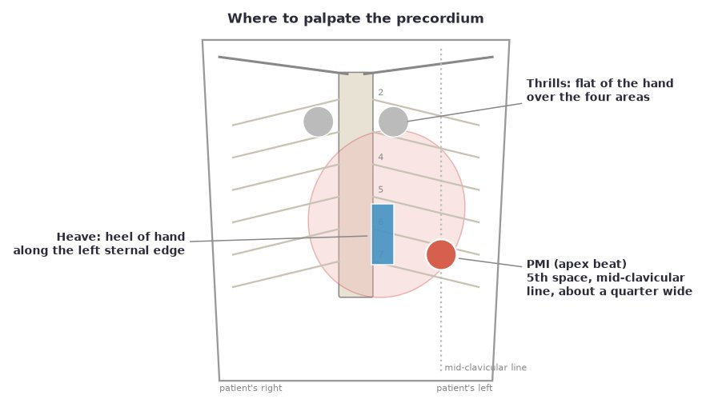
Steps
Patient flat (or sitting forward if needed), chest exposed
Place the pads of your first two or three fingers at the 5th intercostal space, mid-clavicular line
If you cannot feel it, ask the patient to roll onto their left side
Describe it: location (space and cm from the midsternal line), amplitude, duration (time it with your other hand on the carotid pulse), size
Positive
Displaced down and out (heart enlarged) · sustained (as long as the carotid pulse: pressure load, e.g. aortic stenosis) · diffuse (wider than a quarter: left ventricular hypertrophy) (normal: about 2-3 cm wide, the size of a quarter, a gentle tap in the first two-thirds of systole)
Tap to reveal
Things you can feel through the chest wall
Heaves and lifts
Right ventricular enlargement or a big left ventricle
Steps
Place the heel of the hand along the left sternal border, fingers lifted off the chest
Ask the patient to breathe out and hold briefly
Feel whether the heel of your hand is lifted with each beat
Positive
Heel of the hand pushed up with each systole (parasternal lift)
Tap to reveal
Thrills
A murmur you can feel (loud, grade 4 or more)
Steps
Place the flat of your hand (or the base of the fingers) over each of the four areas: aortic, pulmonary, tricuspid, mitral
Feel for vibration, a buzzing
Positive
Buzzing under the palm (a thrill: a loud murmur)
Tap to reveal
Rub
Inflamed pericardium (pericarditis)
Steps
Feel over the left sternal border and the apex
Ask the patient to sit up and lean forward if you are unsure
Positive
A scratchy vibration felt with the beat
Tap to reveal
Pearls
Remember
*"The apical impulse is in the 5th intercostal space in the mid-clavicular line, about 8 cm from the midsternal line, the size of a quarter, tapping. No heaves or thrills."*
Tap to reveal
Auscultate
PPES 1 · Week 4 · 6 manoeuvres
What to look for
Before the manoeuvres
Say first: "Now I'll listen to your heart with the stethoscope in four places. It may feel cold; please breathe normally."
Listen with the diaphragm and the bell in the aortic, pulmonary, tricuspid and mitral areas, toward the mid-axillary line, and over the carotids; the PoM 1 Cardiology session says start with the diaphragm at the apex, then the other three areas
Listen for: cardiac rhythm (regular or irregular), the first and second heart sounds and their intensity, splitting of the heart sounds, extra sounds in systole or diastole, and murmurs
Which part of the stethoscope: the diaphragm (press firmly) for high-pitched sounds: S1, S2, systolic murmurs, the murmurs of aortic and mitral regurgitation, rubs; the bell (rest lightly) for low-pitched sounds: S3, S4 and the rumble of mitral stenosis
The four areas (patient's right is on your left)
Aortic: 2nd intercostal space, right sternal border
Pulmonary: 2nd intercostal space, left sternal border
Tricuspid: lower left sternal border (4th to 5th space)
Mitral (apex): 5th intercostal space, mid-clavicular line
Heart sounds
S1 ("lub"): closure of the mitral and tricuspid valves; start of systole; loudest at the apex; not usually split
S2 ("dub"): closure of the aortic and pulmonary valves; start of diastole; normally splits on breathing in
S3 ("Ken-TUCK-y", early diastole) is rapid filling of a ventricle; can be normal in young people and pregnancy; failure, regurgitation or pericarditis otherwise later: PoM 1 Cardiology
S4 ("Ten-NESS-ee", late diastole) is the atrium squeezing into a stiff ventricle; almost always abnormal (high blood pressure, heart attack scar, tamponade, aortic stenosis) later: PoM 1 Cardiology
Added sounds in systole or diastole: S3, S4, clicks, snaps, rubs
Steps
Switch to the bell at the apex
Roll the patient onto their left side (left lateral position), which makes S3, S4 and the mitral-stenosis rumble louder
Listen for gallop rhythm (three sounds, like a galloping horse), clicks, an opening snap, a rub
Positive
S3 or S4 (gallop) · systolic click · opening snap (mitral stenosis) · pericardial friction rub (a scratchy sound; sit forward and listen with the diaphragm)
Tap to reveal
Murmurs
Describing a murmur
What kind of murmur it is
Steps
Timing: systolic or diastolic (use the carotid pulse)
Pitch (high with the diaphragm, low with the bell) and quality (blowing, harsh, rumbling)
Grade 1 to 6 (1 barely audible; 4 has a thrill; 5 heard with the stethoscope tilted off the chest; 6 heard off the chest)
Where it is loudest, how long it lasts, and where it radiates (to the carotids or the axilla)
Draw it on a diagram
Positive
A murmur described by timing, shape, pitch, grade, location and radiation
Tap to reveal
Aortic regurgitation position
The soft, high-pitched early diastolic murmur of aortic regurgitation
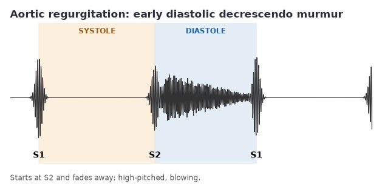
Steps
Patient sitting forward
Ask the patient to breathe out fully and hold
Diaphragm at the left sternal border, 2nd to 4th spacelater: PoM 1 Cardiology
Positive
Soft blowing decrescendo murmur starting right after S2
Tap to reveal
Carotid auscultation
Radiation of a murmur or a bruit
Steps
Place the diaphragm over each carotid
Patient holds their breath
Positive
Bruit or a systolic murmur radiating from the chest
Tap to reveal
Pearls
Remember
Special manoeuvres: the PoM 1 Cardiology session asks you to discuss how body position (left lateral), breathing, the Valsalva manoeuvre (bearing down), squatting and isometric exercise change murmur intensity; the deck itself covers only the left lateral position, the sitting-forward position for aortic regurgitation, and that tricuspid regurgitation gets louder on breathing in while mitral regurgitation does not later: PoM 1 Cardiology
*"S1 and S2 are normal in all four areas. No added sounds. No murmurs. No bruits over the carotids."*
Tap to reveal
Pulses and edema
PPES 1 · Week 4 · 9 manoeuvres
What to look for
Before the manoeuvres
Say first: "Finally I'd like to feel the pulses in your arms and legs, and check your ankles for swelling."
Palpate the peripheral pulses (radial, brachial, femoral, popliteal, posterior tibial, dorsalis pedis) and compare the amplitude of each with the pulse on the other side (symmetrical or not)
Note: rate (normal 60 to 100 beats per minute), rhythm (regular, regularly irregular, irregularly irregular), amplitude (strength) and contour (shape) at the carotid
Examine for peripheral edema: swelling of the ankles and shins, and the sacrum in a bed-bound patient
Tap to reveal
Arm pulses
Radial pulse
Rate and rhythm, and equal arms
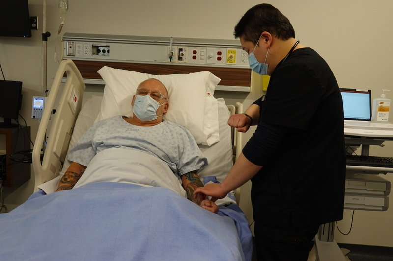
Steps
Place the pads of two or three fingers on the thumb side of the front of the wrist, medial to the radial styloid
Count for 30 seconds (or 15 seconds if you are sure it is regular), double it
Note rhythm
Compare both sides
Positive
Fast or slow rate · irregular rhythm · one side weaker
Tap to reveal
Brachial pulse
Amplitude and contour in the arm
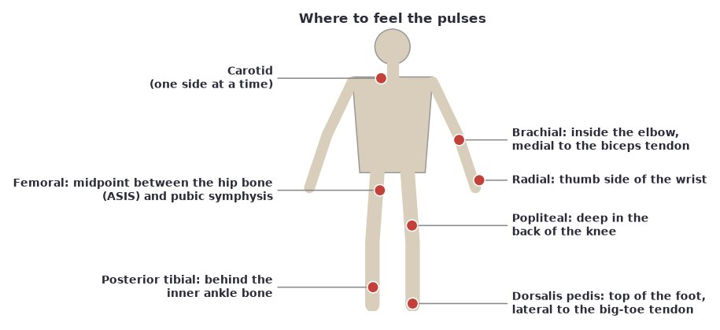
Steps
Support the patient's arm slightly bent
Feel inside the elbow, medial to the biceps tendon, with your thumb or fingers
Compare both sides
Positive
Weak or bounding pulse · asymmetry
Tap to reveal
Carotid artery
Carotid pulse
Same as section 4
Steps
Check one side at a time between the larynx and the sternocleidomastoid
Note rate, rhythm, contour and amplitude
Positive
Weak and late · bounding · irregular
Tap to reveal
Leg pulses
Femoral pulse
Blocked flow to the legs; delay compared with the radial pulse
Steps
Patient lying flat, groin exposed with consent and drape
Feel below the inguinal ligament, at the midpoint between the anterior superior iliac spine and the pubic symphysis
Press firmly; compare both sides
Feel the radial and femoral pulses together to check for a delay extra
Positive
Weak or absent · delayed compared with the radial pulse (coarctation of the aorta)
Tap to reveal
Popliteal pulse
Flow behind the knee
Steps
Patient lying, knee slightly bent
Both hands around the knee, fingers in the back of the knee
Press deep
Positive
Absent or weak (deep, so hard to feel)
Tap to reveal
Posterior tibial pulse
Flow to the foot
Steps
Foot relaxed
Feel just behind the inner ankle bone (medial malleolus)
Compare both feet
Positive
Absent or weak (narrowed leg arteries)
Tap to reveal
Dorsalis pedis pulse
Flow to the foot
Steps
Feel on the top of the foot, between the bases of the 1st and 2nd metatarsals, lateral to the big-toe tendon
Compare both feet
Positive
Absent or weak
Tap to reveal
Circulation and fluid
Capillary refill
Poor circulation in the fingers or toes
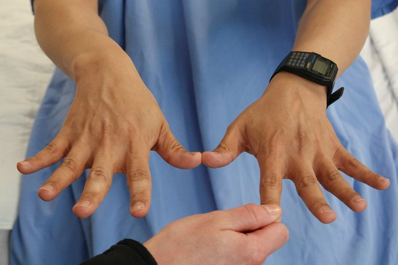
Steps
Press on a nail bed or fingertip for 5 seconds, then release
Count how long the colour takes to return
Positive
More than 3 seconds (normal: less than 3)
Tap to reveal
Peripheral edema
Fluid in the tissues from heart failure or other causes
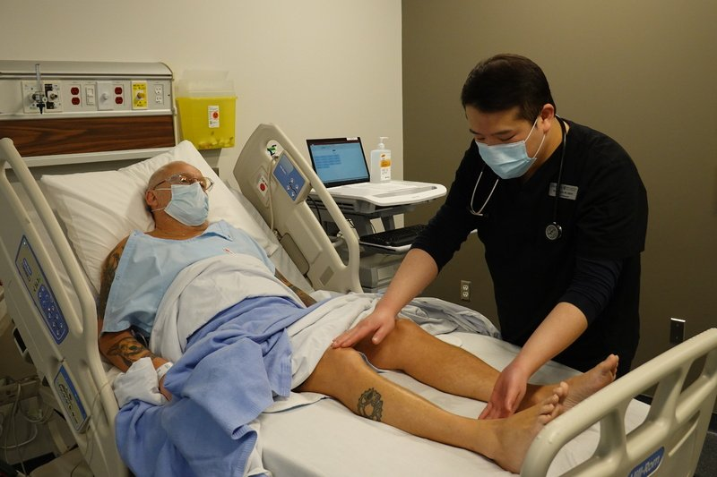
Steps
Look at both ankles, shins and feet for swelling
Press firmly with your thumb for a few seconds over the shin bone and behind the inner ankle
Look for a dent that stays (pitting) and note how high the swelling goes
In a bed-bound patient, check the sacrum
Positive
A pit that stays after you lift your thumb · swelling up the legs or at the sacrum (right heart failure)
Tap to reveal
Pearls
Remember
*"Radial, brachial, femoral, popliteal, posterior tibial and dorsalis pedis pulses are present and symmetrical. There is no peripheral edema."*
Tap to reveal
The four classic murmurs
PoM 1 · Cardiology · 5 manoeuvres
What to look for
Before the manoeuvres
For aortic stenosis, aortic insufficiency (regurgitation), mitral regurgitation and mitral stenosis, describelater: PoM 1 Cardiology
i) the murmur on auscultation (timing, shape, pitch, grade, location, radiation)
ii) the precordial findings you would expect (heaves, thrills, changes to the apex beat)
iii) the associated signs and symptoms (fatigue, shortness of breath, blood pressure, pulse)
Rule of thumb: if a valve will not open (stenosis) you hear a murmur when it is meant to be open; if it will not close (regurgitation) you hear a murmur when it is meant to be closed
Tap to reveal
Valves that will not open
Aortic stenosis
Narrowed aortic valve: the left ventricle pumps against a block later: PoM 1 Cardiology
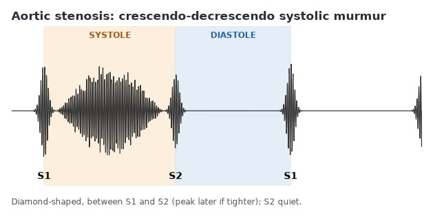
Steps
Diaphragm over the aortic area (2nd space, right sternal border)
Listen to S2 (quiet) and for an S4
Follow the sound up to the carotids
Feel the carotid pulse and the apex
Positive
Crescendo-decrescendo systolic murmur (diamond-shaped, peaks later the tighter the valve), radiates to the carotids · quiet S2 · S4 · weak, late pulse (pulsus parvus et tardus) · sustained apex · shortness of breath, chest pain, fainting
Tap to reveal
Mitral stenosis
Narrowed mitral valve: blood cannot leave the left atrium later: PoM 1 Cardiology
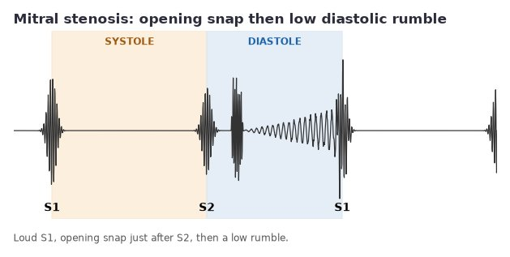
Steps
Roll the patient to the left side
Bell at the apex
Listen for a loud S1 and an opening snap
Feel for a parasternal lift and look at the JVP
Positive
Low-pitched mid-diastolic rumble (decrescendo-crescendo) after an opening snap · loud S1 · parasternal lift and raised JVP if severe · breathlessness
Tap to reveal
Valves that leak
Aortic regurgitation
Leaking aortic valve: blood flows back into the left ventricle later: PoM 1 Cardiology
Leaking mitral valve: blood flows back into the left atrium later: PoM 1 Cardiology
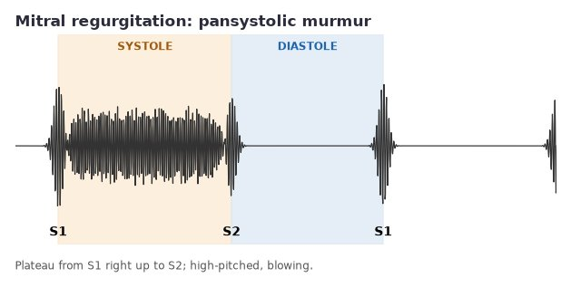
Steps
Diaphragm at the apex
Follow the sound into the armpit
Ask the patient to breathe in to check the murmur does not change
Feel the apex
Positive
Pansystolic high-pitched blowing murmur at the apex, radiates to the axilla, unchanged by breathing · displaced, enlarged apex · S3
Tap to reveal
Tricuspid regurgitation
Leaking tricuspid valve: blood flows back into the right atrium extra
Steps
Diaphragm at the lower left sternal border
Listen while the patient breathes in
Look at the JVP and feel for a parasternal lift
Positive
Pansystolic blowing murmur, louder on breathing in, spreading to the lower right sternal border · raised JVP · parasternal lift
Tap to reveal
Pearls
Remember
*"There is a crescendo-decrescendo systolic murmur, loudest in the aortic area and radiating to the carotids, with a soft S2. This is in keeping with aortic stenosis."*
Tap to reveal
Finishing the exam
PoM 1 · Cardiology · 3 manoeuvres
What to look for
Before the manoeuvres
A full cardiovascular exam also takes in the lungs and the abdomen, with a focus on the posterior thorax and lungs and the liver and other peripheral signs (the syllabus says this will not be emphasized) later: PoM 1 Cardiology
Tap to reveal
Beyond the heart
Liver and aorta
An enlarged, congested liver; an aortic aneurysm
Steps
Patient lying with knees bent
Palpate the aorta in the upper abdomen, just left of the midline
Palpate the liver edge under the right ribs
Positive
Enlarged liver (hepatomegaly: right heart failure) · wide pulsatile mass (aortic aneurysm) later: PoM 1 Cardiology
Tap to reveal
Ascites
Fluid in the abdomen
Steps
Look at the flanks for bulging
Ask if they feel bloated or if their waistband is tight
Positive
Bulging flankslater: PoM 1 Cardiology
Tap to reveal
Lung bases and sacrum
Fluid backing up from the heart: pleural effusion, pulmonary edema, sacral edema
Steps
Patient sitting forward: percuss the lung bases, two spots on each side
*"To complete my examination I would check the blood pressure in both arms, perform a respiratory and abdominal examination, and look for peripheral edema."*
⚠ Chest pain with a new murmur, or a very low or very high pressure, is an emergency until proven otherwise.
Tap to reveal
Videos
Demonstration video from Geeky Medics (YouTube), loaded only when you tap it. Heart-sound audio from Wikimedia Commons, Kudriavtsev, Polyshchuk and Roy (CC BY 2.0): aortic stenosis and a split S2. Audio plays in Chrome, Firefox and Edge; Safari does not play .ogg files.
Image credits
Images reused under their open licences (Creative Commons or public domain). Some were cropped to hide faces.
General inspection: Labatt Family School of Nursing, Schulich School of Medicine and Dentistry (Health Education Media Library, Western Libraries), CC BY-NC 4.0, source
Hands: Labatt Family School of Nursing, Schulich School of Medicine and Dentistry (Health Education Media Library, Western Libraries), CC BY-NC 4.0, source
Chest wall inspection: Labatt Family School of Nursing, Schulich School of Medicine and Dentistry (Health Education Media Library, Western Libraries), CC BY-NC 4.0, source
Listening areas: Labatt Family School of Nursing, Schulich School of Medicine and Dentistry (Health Education Media Library, Western Libraries), CC BY-NC 4.0, source
Radial pulse: Labatt Family School of Nursing, Schulich School of Medicine and Dentistry (Health Education Media Library, Western Libraries), CC BY-NC 4.0, source
Capillary refill: Labatt Family School of Nursing, Schulich School of Medicine and Dentistry (Health Education Media Library, Western Libraries), CC BY-NC 4.0, source
Peripheral edema: Labatt Family School of Nursing, Schulich School of Medicine and Dentistry (Health Education Media Library, Western Libraries), CC BY-NC 4.0, source